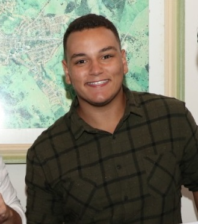
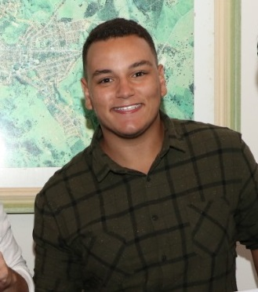

Olá me chamo Pedro Dantas, sou um jovem universitário, amante de tecnologia, inovação e resolução de problemas. Estou atualmente cursando administração na Universidade Federal da Bahia e foi dentro da universidade que se abriram as principais portas para minha carreira profissional. A primeira delas foi a Vitória no Maior Hackathon do Mundo organizado pela NASA, o Nasa Space Apps Challenge. Com isso consegui me desenvolver em áreas como, gestão em equipe, de projetos, apresentações de Pitch, metodologias Ágil, sem contar nas diversas conexões que mudaram o rumo da minha vida para o futuro, os projetos que venho construindo são hoje o que me movem no sentido profissional, buscando criar soluções para problemas reais da sociedade eu com certeza estarei sempre à procura de problemas e desafios que necessitam de solução, para resolvê-los através da inovação e da tecnologia.